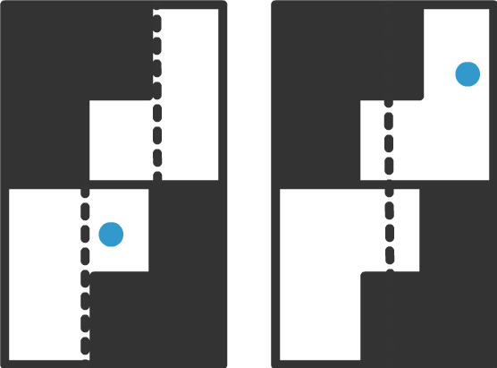

Thermodynamic Cost and Benefit of Memory
Paper by Susanne Still, Summary and Illustrations by Farita Tasnim
Feels
I thoroughly enjoyed reading this stunning work by Susanne Still. The generality of the theoretical framework developed herein, as well as its uniqueness due to accounting for partial observability, helped set the spark for many ideas in my mind, which I'll sprinkle throughout my summary below.
In a Nutshell
A theoretical framework for the thermodynamics of memories interacting with partially observable systems demonstrates that minimizing the lower bound of the dissipation of such an information engine leads to an optimal data representation strategy when available knowledge and system manipulability are limited.
Szilard Engine
A particle is trapped in a box with a partition in the middle. If an agent who is observing the system has knowledge of which half of the box the particle lies in, it can perform work extraction (of amount \(~kT\ln 2\)) by isothermal expansion. However, models such as this assume that (1) all agent choices are optimal and (2) all relevant degrees of freedom are observable. This heavily limits the discussion of information engines to cases where all captured information can be converted into useful work. Most of the time in real systems, agents must act on partial knowledge and predict quantities relevant to work extraction from the limited available data. Modeling this more realistic aspect of information engines would be useful for systems such as biomolecular machines and engineered nanotechnology.

General Information Engine Setup
The following conventions are used:
- The cost of information acquisition and decision making are included in the energy accounting (otherwise information can be viewed as fuel supplied from the outside).
- The engine is allowed to make use of temperature differences.
- Energy flows into a system are positive.
The information engine contains the following components:
- A partially observable system, with microstate denoted by a random variable \(~Z\) with realizations \(~z \in Z\)
- An agent implemented by another physical system which turnes measurements into a stable memory denoted by a random variable \(~M\) with realizations \(~m \in M\). The memory is used to decide on a work extraction protocol.
- A work extraction device that allows the agent to couple useful energy out of the system.
Each cycle runs as follows:
- From \(~t_0^i \rightarrow t_1^i\): The agent performs measurement and writes it into memory. This protocol changes external control parameters on the memory as a f(observable data). During this process the engine is connected to a heat bath at temperature \(~T\), and the average amount of work done on the memory is \(~\langle W_M \rangle\), while the average amount of heat dissipated is \(~\langle -Q_M \rangle\).
- From \(~t_1^i \rightarrow t_2^i\), the temperature of the heat bath is adjusted to temperature \(~T'\).
- From \(~t_2^i \rightarrow t_3^i\), work extraction occurs via a protocol that is a f(agent's memory state). During this process, the average amount of work extracted from the system is \(~\langle -W_E \rangle\) and the average heat absorbed from the heat bath is \(~\langle Q_E \rangle\). After this process, the memory no longer has any exploitable correlations with the system.
- From \(~t_3^i \rightarrow t_0^{i+1}\), the system is prepared for the next cycle, by a protocol which is invariant across cycles. This process is assumed to not require any work. In the example of the Szilard engine, this was removing the partition and re-inserting it into the middle of the box.
Free Energy Changes
The free energy change at a time depends on the energy and entropy averaged over the joint distribution over the system states and memory states: \(~F_t = \langle E_t (m,z) \rangle_{p_t (m,z)} - kTH_t\), where the Shannon entropy is defined as: \(~H_t = - \langle \ln(p_t (m,z)) \rangle_{p_t (m,z)}\)
We further establish that:
$$\Delta F_M \equiv F_{t_1} - F_{t_0} = \Delta E_M (= W_M + Q_M) -kT\Delta H_M$$ $$\Delta F_E \equiv F_{t_3} - F_{t_2} = \Delta E_E (= W_E + Q_E) -kT\Delta H_E$$
System Decomposition
The system can be decomposed into observable (write-able into memory) and non-observable components: \(~Z = (X, \bar X)\). It can also be decomposed into manipulable (relevant for work extraction) and non-manipulable components: \(~Z = (X, \bar X)\). The mutual information \(~ I(X,Y) \geq 0\) in order to extract work.
System Manipulation
The system cannot be manipulated in a way that changes anything but \(~y \in Y\), i.e. the state of the non-manipulable components \(~ \bar y \in \bar Y \) is unaffected by the state of the manipulable components and the state of the memory during the work extraction period.
$$p_{t_2}(\bar y \mid y,m) = p_{t_3}(\bar y \mid y,m) = p(\bar y \mid y,m)$$
Data Representation
The stochastic mapping (i.e. the data representation) \(~ p(m \mid x)\) from observable data to memory state is independent of unobservable data:
$$ p_{t_1}(m \mid z) = p_{t_1}(m \mid x, \bar x) = p_{t_1}(m \mid x) \equiv p(m \mid x)$$
Marginal Distributions
The marginal distributions for the system are invariant to all changes performed on the system. Thus \(~ \forall k \in \{1,2,3,4\}\)
$$ p_{t_k}(z) = p(z), ~~~p_{t_k}(y) = \sum_{\bar y} p_{t_k}(y, \bar y) = p(y), ~~~p_{t_k}(x) = \sum_{\bar x} p_{t_k}(x, \bar x) = p(x)$$The preparation step introduces a hidden variable \(~v\) into the system, which if discovered, the system appears in a nonequilibrium state that can be exploited during work extraction.
$$p_{t_0}(y) = \sum_v p(y \mid v) p(v)$$The marginal probability distribution of the memory derives only from the statistical average over measurement outcomes.
$$p_{t_k}(m) = \sum_x p(m \mid x) p(x)$$
Inference
The agent's ability to predict the quantities relevant to work extraction from the memory derives from a statistical average over measurement outcomes:
$$p_{t_2}(y \mid m) = \sum_x p(y \mid x) p(m \mid x) p(x)$$utilizing that if a measurement outcome is given, the memory adds no new relevant information: \(~p(y \mid m, x) = p(y \mid x)\)
Thermodynamic Cost of Memory
- At \(~t_0\), the system and memory are uncorrelated: \(~p_{t_0}(m,z) = p_{t_0}(m)p_{t_0}(z) = p(m)p(z) \)
- At \(~t_1\), after the memory is constructed, the memory possesses useful correlations with the system: \(~p_{t_1}(m,z) = p_{t_1}(m \mid x, \bar x)p_{t_1}(z) = p(m \mid x)p(z) \)
- Since the uncertainty about the system decreases, the entropy decreases by the amount of mutual information captured in the memory about the observable data: $$\Delta H_M = H[M,X] - H[M] = -I[M,X] $$
- This process happens at a temperature \(~T\), so the free energy change associated with memory construction is \(~\Delta F_M = W_M + Q_M + kTI[M,X]\)
- By the Second Law, the work required to construct the memory must be greater than or equal to the resulting free energy change of the memory: \(~ W_M \geq \Delta F_M\). Thus, operating a memory requires, at minimum, a dissipation proportional to the amount of information retained: \(~ -Q_M \geq kTI[M,X]\)
Thermodynamic Gain from Memory
- At \(~t_2\), the beginning of work extraction, the correlations between the system and memory may provide useful information for predicting quantities relevant to work extraction: \(~ p_{t_2}(m,z) = p_{t_2} (\bar y \mid y, m) p_{t_2}(y \mid m) p_{t_2}(m) = p(\bar y \mid y, m) p(y \mid m) p(m) \)
- At \(~t_3\), the end of the work extraction protocol, all such correlations between manipulable system components and the memory are then gone and thus: \(~ p_{t_3}(m,z) = p_{t_3} (\bar y \mid y, m) p_{t_3}(y) p_{t_3}(m) = p(\bar y \mid y, m) p(y) p(m) \)
- This again increases uncertainy about the system, and thus the entropy of the joint system increases by an amount equal to the mutual information between the memory and manipulable system components $$\Delta H_E = H[Y] - H[Y \mid M] = I[M,Y]$$
- This process occurs at temperature \(~T'\), so the free energy change associated with work extraction is \(~\Delta F_E = W_E + Q_E - kT'I[M,Y] \)
- By the second law, one can only extract an amount of work less than or equal to the decrease in free energy of the system during the extraction process: \(~W_E \geq \Delta F_E\) (remember that both quantities are negative). Thus, the amount of heat absorbed that can be absorbed by the system and turned into work is bounded proportionally to the amount of information retained in the agent's memory that's relevant to the system components pertinent to work extraction : \(~Q_E \leq kT'I[M,Y] \). This holds if the relevant quantities are fully observable.
- However, generally, the system components that are observable by the agent do not provide full information regarding the components relevant to work extraction. As such, all of the energertic cost of running the memory may not be recovered. Out of the information \(~I_{mem} = I[M,X]\) captured in the memory, only some bits \(~I_{rel} = I[M,Y] \) are useful for prediction. The rest, \(~I_{irrel} = I_{mem} - I_{rel} \geq 0 \), is irrelevant information.
- So, we can actually relax the upper bound on heat absorption: \(~Q_E \leq kT'I[M,X]\).
- Does this imply that more heat can be absorbed and converted into work when we don't have full information? It cannot be the case, because full work extraction can only occur in the ideal case when we have full information about relevant quantities in the system, or at least when \(~Y \subset X\). So how to think about this relaxed upper bound?
- At this point, it may be helpful to recall that the mutual information of two random variables is $$I[X,Y] = D_{KL}(P_{(X,Y)} || P_X \otimes P_Y) = \sum_{y \in Y} \sum_{x \in X} p(x,y) \ln(\frac{p(x,y)}{p(x)p(y)}) $$ i.e. that the mutual information signifies the loss in correlations between two random variables. A fun related but unrelated theory is that the KL divergence between probability distributions of the forward and reverse trajectories of a process define the arrow of time [cite Crooks].
Lower Bound on Dissipation
If the information engine is connected to a heat bath of constant temperature for an entire cycle, it dissipates an average amount of heat \(~ -Q = -Q_M - Q_E \geq kTI_{irrel} \). The irrelevant information retained in the memory sets a lower limit on the dissipation. This lower bound is zero only when no irrelevant information is retained.
An Illustrative Example
Let's talk about an example now to make calculations more concrete. Consider the Szilard engines below. In the left box, knowledge of the \(~x\) coordinate of the particle provides no information about the \(~y\) coordinate (i.e. which half of the box the particle is located in). However, in the right box, introducing geometric constraints within the box creates correlations between the degrees of freedom. As such, an agent observing the \(~x\) coordinate would have a non-trivial probability distribution for the \(~y\) coordinate, and thus would be able to engage in predictive inference.
Now note that the coarse-graining strategy chosen for data representation in the agent's memory will affect how much work can be extracted from the setup. For example, representing the particle's \(~x\) coordinate with a 2-state (left) or 3-state (right) memory affect's the agent's capacity for predictive inference.

Access to Two Temperatures
Protocols
Closing Thoughts
Original Paper